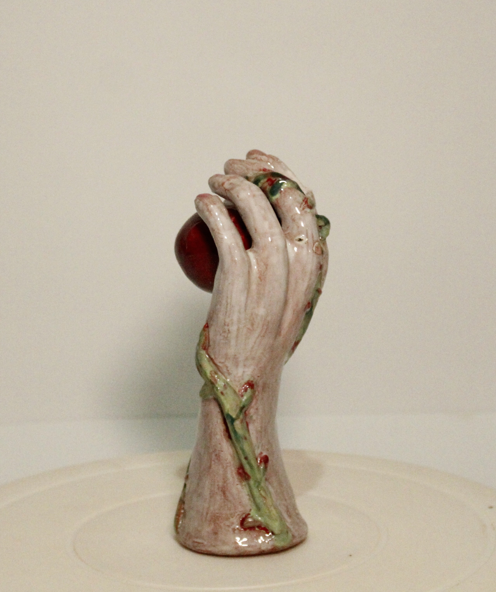
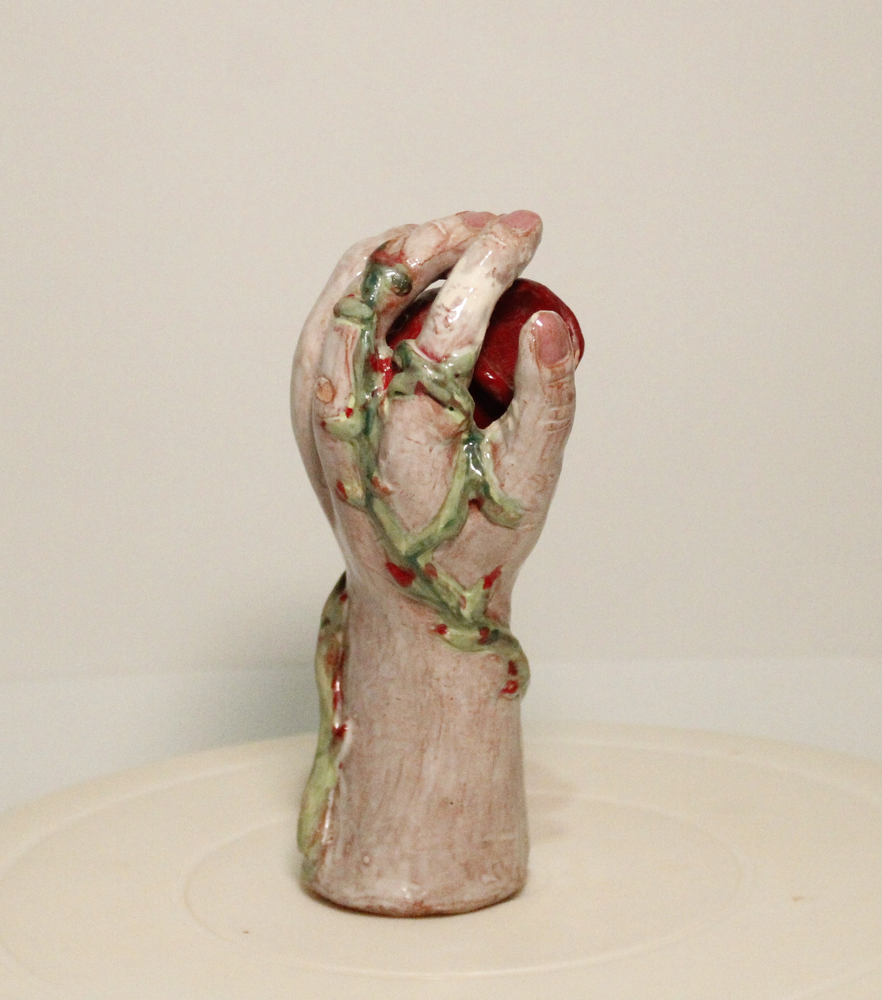
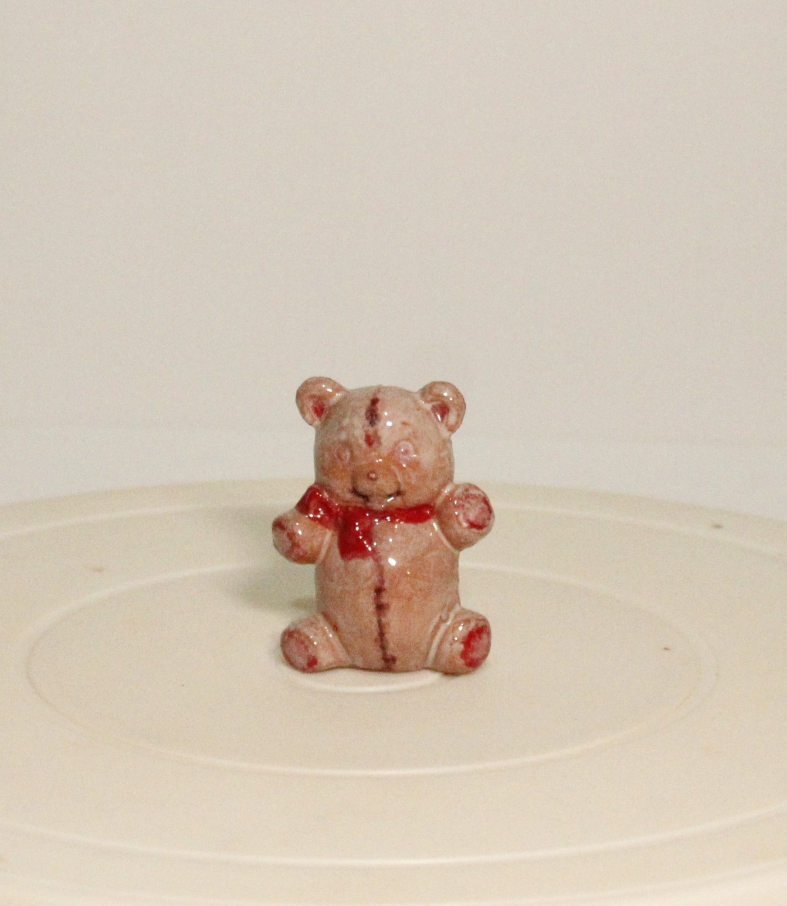
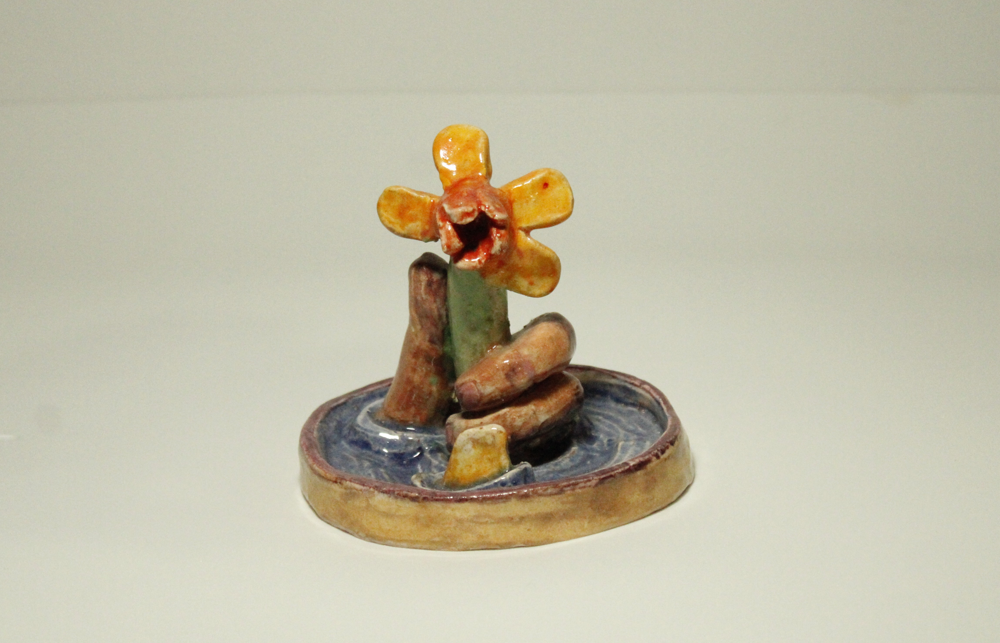
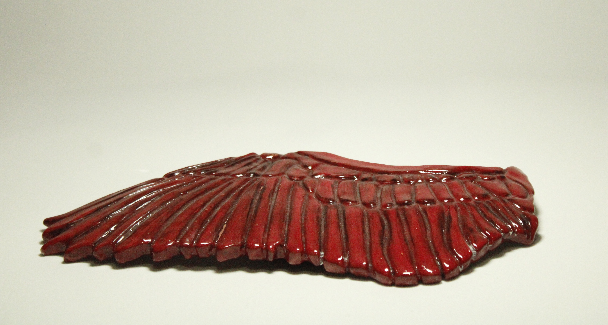
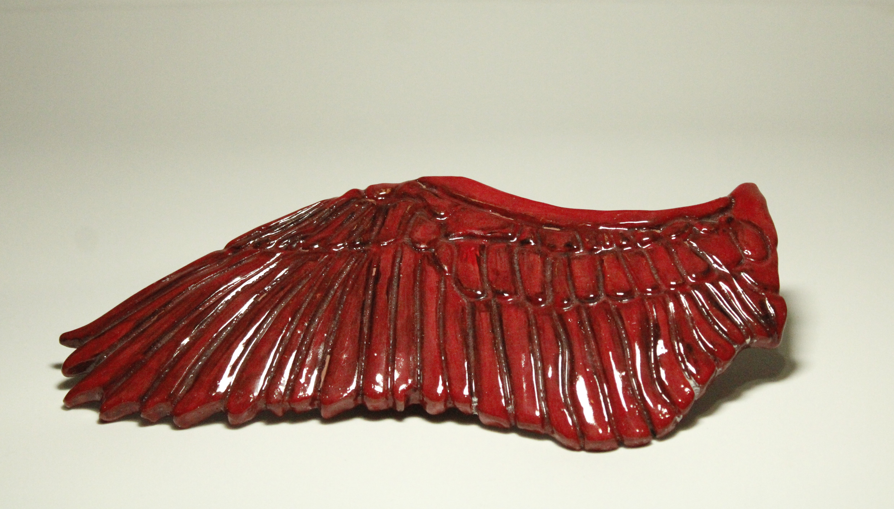
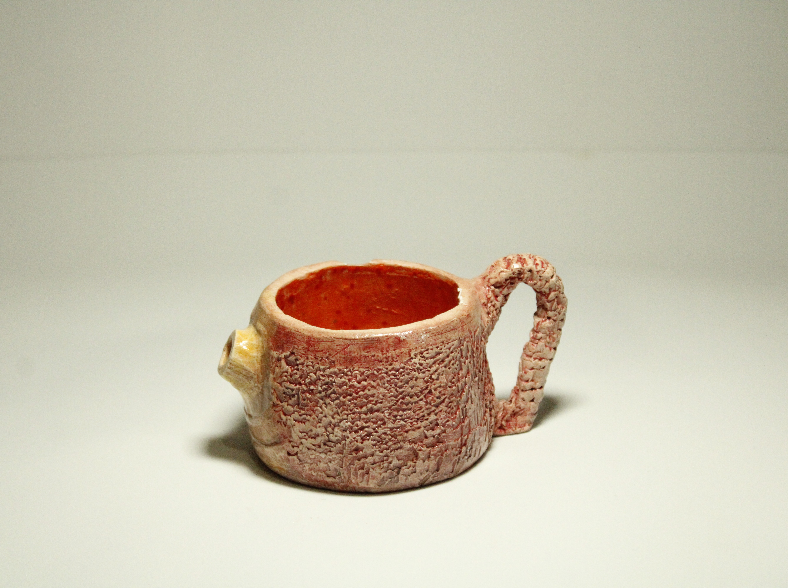
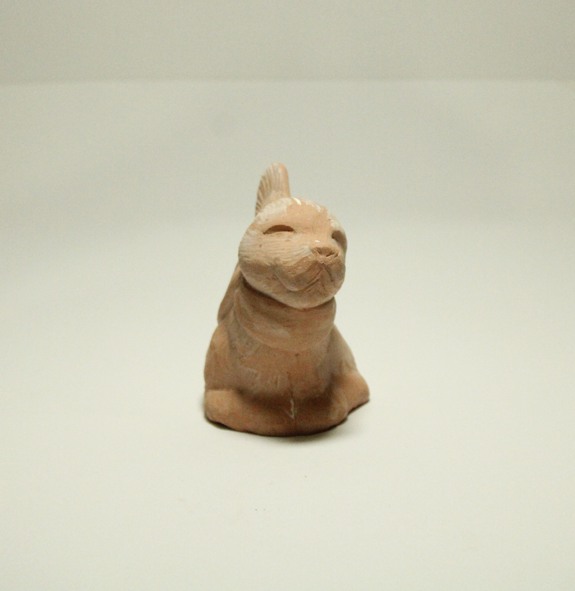
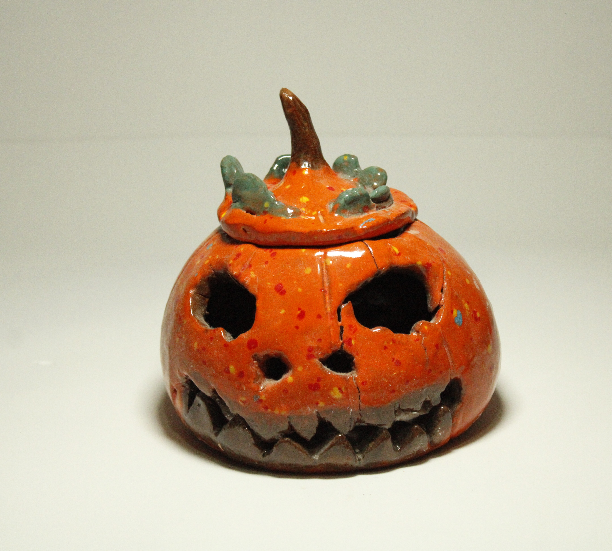

Mi Trabajo en Cerámica






La cerámica es una de mis grandes pasiones. Creo piezas únicas utilizando técnicas tradicionales y modernas. Cada obra es una expresión de mi creatividad y dedicación.
Volver al PortafolioTécnicas Utilizadas
En mi trabajo con cerámica, utilizo diversas técnicas para dar forma y vida a mis piezas:
- Modelado a mano: Creo formas únicas utilizando solo mis manos y herramientas básicas.
- Torno de alfarero: Para piezas simétricas y delicadas.
- Esmaltado: Aplico esmaltes para dar color y textura a las piezas.
Materiales
Trabajo con una variedad de materiales para crear mis piezas de cerámica:
- Arcilla: De diferentes plasticidades.
- Esmaltes: Para dar acabados únicos y coloridos.
- Óxidos y pigmentos: Para decorar y añadir detalles especiales.
Videos de Cerámica
Documentación
Descarga este PDF para conocer más sobre mi proceso de creación en cerámica.
Descargar PDF sobre CerámicaGalería Adicional



Explora más de mi trabajo en esta galería adicional, donde cada pieza tiene una historia que contar.